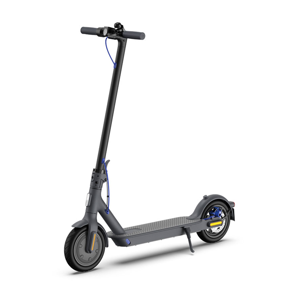
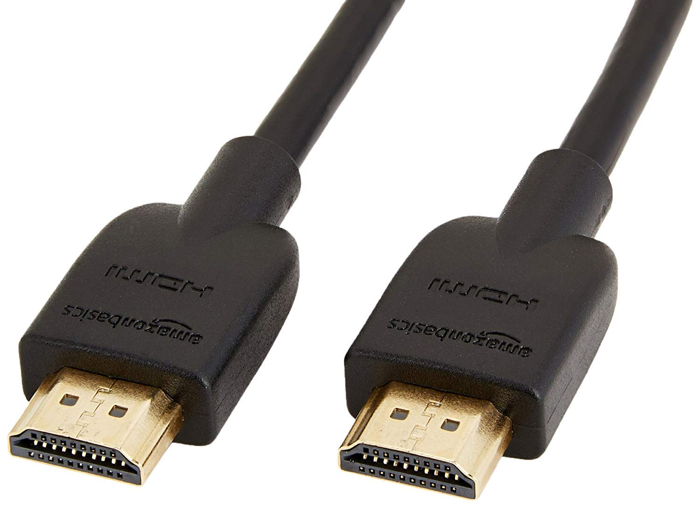
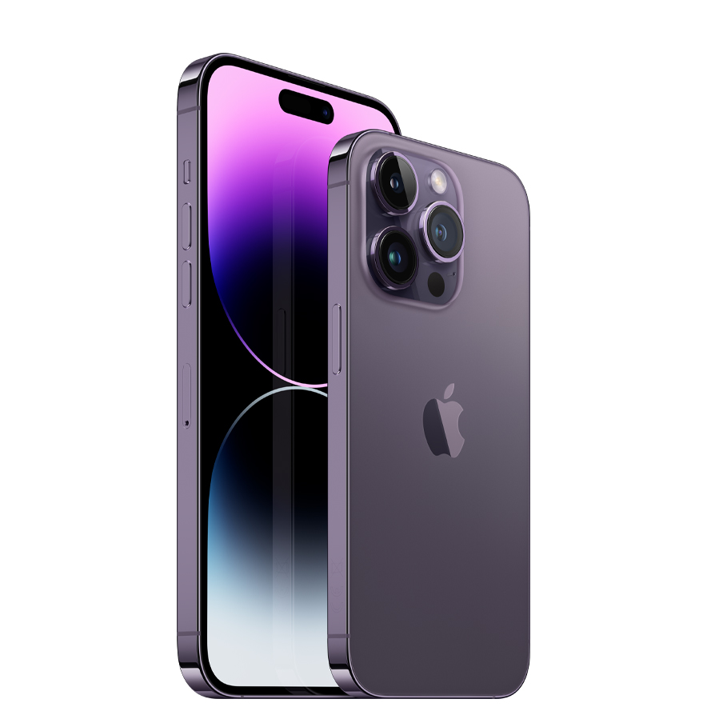
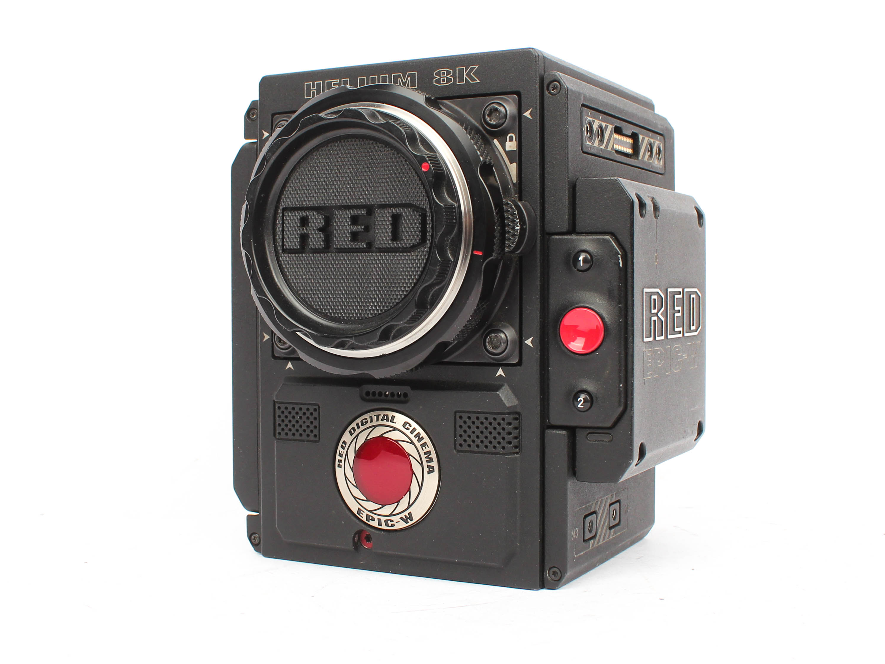
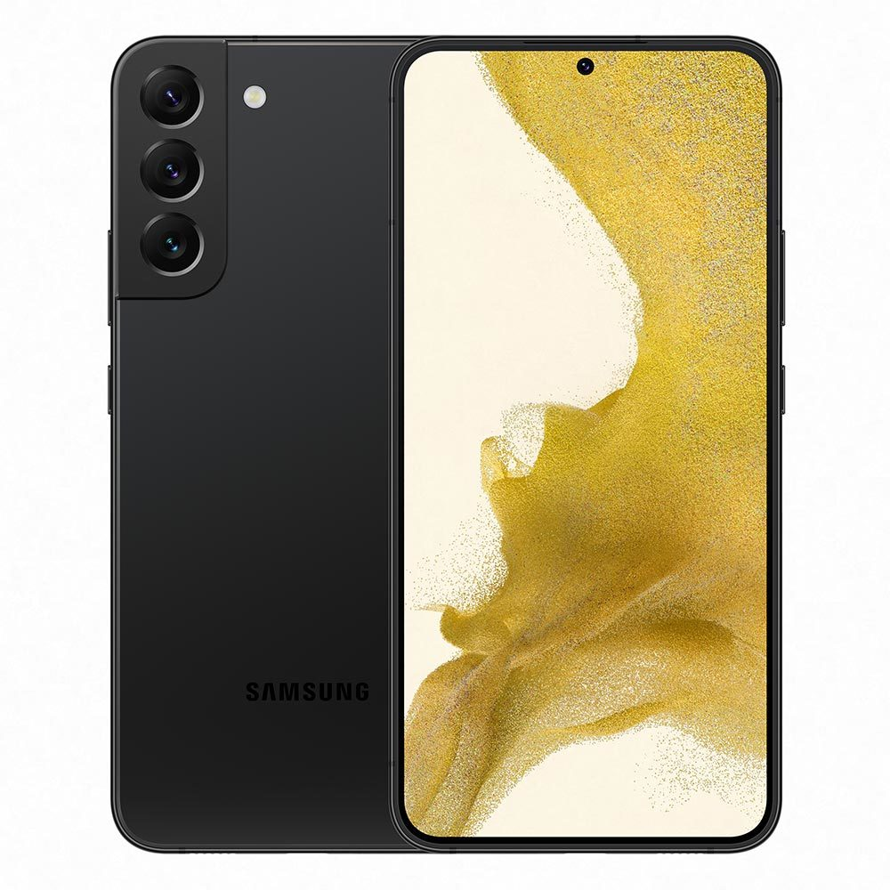
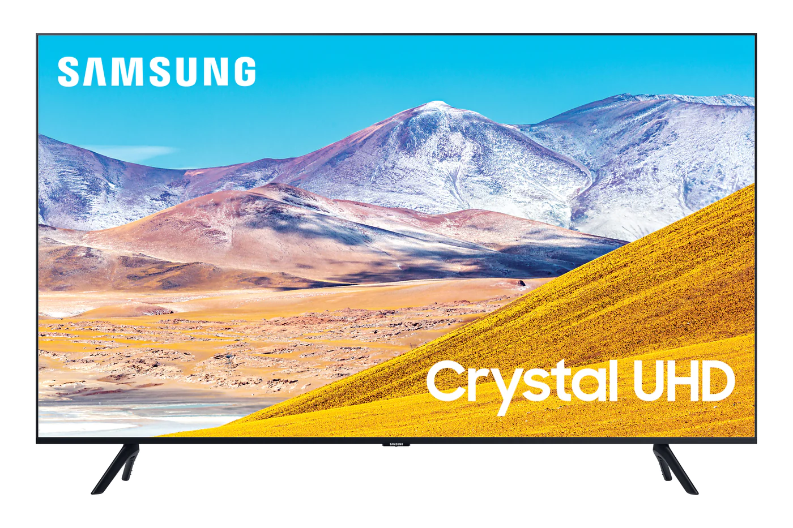
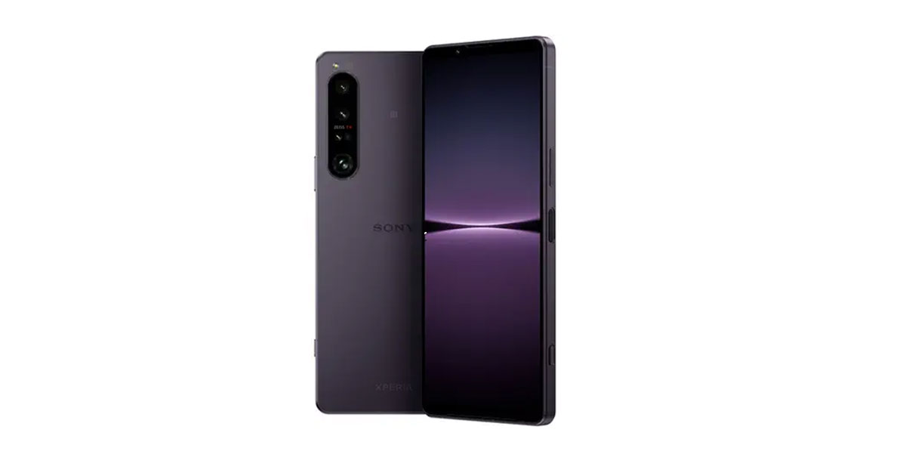
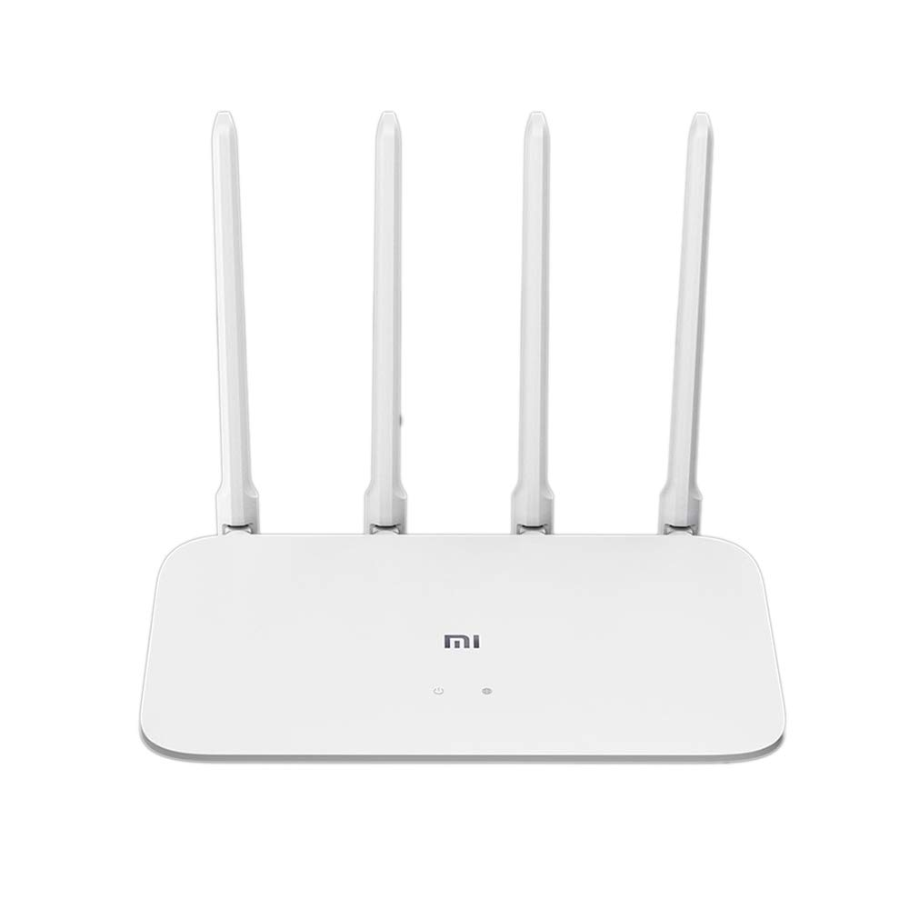

Beats Studio 3
 High-performance wireless noise cancelling headphones
Compatible with iOS and Android devices.
Pure adaptive noise canceling (pure ANC) actively blocks external noise
Real-time Audio calibration preserves a Premium listening experience
Up to 22 hours of battery life enables full-featured all-day wireless playback
Apple's W1 chip and industry-leading Bluetooth technology keep you connected farther with fewer drop-outs
With fast Fuel, a 10-minute charge gives 3 hours of play when battery is low. Rechargeable lithium ion battery
Take calls, control your music, and activate Siri with the multifunction on-ear controls and microphone
What's in the box: Beats Studio3 Wireless headphones, Carrying case, 3.5mm RemoteTalk cable, Universal USB charging cable, Quick Start Guide, Warranty Card (USB power adapter sold separately)
High-performance wireless noise cancelling headphones
Compatible with iOS and Android devices.
Pure adaptive noise canceling (pure ANC) actively blocks external noise
Real-time Audio calibration preserves a Premium listening experience
Up to 22 hours of battery life enables full-featured all-day wireless playback
Apple's W1 chip and industry-leading Bluetooth technology keep you connected farther with fewer drop-outs
With fast Fuel, a 10-minute charge gives 3 hours of play when battery is low. Rechargeable lithium ion battery
Take calls, control your music, and activate Siri with the multifunction on-ear controls and microphone
What's in the box: Beats Studio3 Wireless headphones, Carrying case, 3.5mm RemoteTalk cable, Universal USB charging cable, Quick Start Guide, Warranty Card (USB power adapter sold separately)
Xiaomi Electric Scooter

Powerful Motor & Long Battery Life - Aovopro ESMAX 500W motor allows for speeds up to 21mph. Battery (42V/14.5AH) with a Max travel range of up to 27 miles under specific conditions, and max load of 500 lbs.
Comfortable Commute - ESMAX electric scooter is equipped with 10-inch solid tires on the front and rear wheels and four shock absorbers on the front and rear wheels to provide maximum comfort even on rough surfaces or speed bumps.
High-tech safety design - ESMAX electric scooter adopts 10 "anti-puncture self-sealing air tyre, equipped with 20 meters super bright headlight and rear wheel warning light to enhance safety，Double brake, front drum and rear electric brake,sensitive and safe brake
Perfect for Commute and Travel - The electric scooter adults collapses for easy storage in car trunks and other compact spaces
Waterproof grade IP65: It has explosion-proof, waterproof, foreign body intrusion, and can be driven on rainy days or on watery roads to ensure maximum road conditions
Xiaomi App - Simply connect Aovopro electric scooter's app to lock your scooter, to customize the scooter acceleration and braking responses
Warranty Policy and Excellent Customer Team - One Year Warranty, if you have any product problem, you can contact us directly and we will provide you with an absolutely satisfactory solution
High-Speed HDMI Cable

IN THE BOX: Nylon braided HDMI cable (A Male to A Male) for connecting 2 HDMI-enabled devices; 3 feet long
DEVICE COMPATIBLE: Connects Blu-ray players, Fire TV, Apple TV, PS4, PS3, Xbox One, Xbox 360, and computers to TVs, displays, A/V receivers, and more
SUPPORTS 4K VIDEO: Supports 4K video at 60 Hz, 2160p, 48-bit/px color depth, as well as bandwidth up to 18Gbps, Ethernet, 3D, and Audio Return Channel (ARC)
EASY CONNECTION: Share an Internet connection among multiple devices (no need for a separate Ethernet cable)
BACKWARDS COMPATIBLE: Works with earlier versions to allow for use with a wide range of HDMI-enabled devices
NOTE: This cable supports up to 4K@60Hz, so if a connected device's output is higher than that standard, the cable won't work properly
Note: Products with electrical plugs are designed for use in the US. Outlets and voltage differ internationally and this product may require an adapter or converter for use in your destination. Please check compatibility before purchasing.
Apple iPhone 14 Pro Max

Face ID: Facial recognition technology used to unlock the device and authenticate transactions.
A-series chip: Each new iPhone typically introduces a more powerful and efficient A-series chip, providing improved performance and energy efficiency.
Dual or Triple Camera System: iPhones have been featuring advanced camera systems with multiple lenses, including wide-angle, telephoto, and ultra-wide lenses, offering improved photography and video capabilities.
Night mode: Introduced in newer models, Night mode enhances low-light photography, capturing brighter and more detailed images in dark environments.
Water and Dust Resistance: iPhones have become more resistant to water and dust, with ratings such as IP68, allowing them to withstand immersion in water up to a certain depth for a specified time.
Wireless Charging: Some iPhone models support wireless charging using the Qi standard, eliminating the need for a physical charging cable.
Animoji and Memoji: These features use the front-facing TrueDepth camera to create animated emojis that can mimic facial expressions and be customized to resemble the user.
OLED Display: Recent iPhone models have adopted OLED displays, which offer improved color accuracy, contrast, and energy efficiency compared to traditional LCD displays.
Augmented Reality (AR): iPhones have been optimized for AR experiences, allowing users to overlay virtual objects onto the real world using the device's camera and sensors.
Enhanced Privacy Features: Apple has introduced various privacy features, such as App Tracking Transparency, which gives users more control over their data and allows them to prevent apps from tracking their activity without permission.
Apple Macbook Air with M1 Chip
 M1 is our first chip designed specifically for Mac.
Apple silicon integrates the CPU, GPU, Neural Engine, I/O,
and so much more onto a single tiny chip. Packed with an astonishing 16 billion transistors,
M1 delivers exceptional performance, custom technologies,
and unbelievable power efficiency — a major breakthrough for Mac.
M1 is our first chip designed specifically for Mac.
Apple silicon integrates the CPU, GPU, Neural Engine, I/O,
and so much more onto a single tiny chip. Packed with an astonishing 16 billion transistors,
M1 delivers exceptional performance, custom technologies,
and unbelievable power efficiency — a major breakthrough for Mac.
RED V-RAPTOR Camera

Key Features
V-RAPTOR DSMC3 8K VV Camera System
4 x REDVOLT MICRO-G Batteries
Dua Battery Charger, RED Touch 7.0 LCD
2 x 2TB PRO CFexpress Cards & Reader
Top Plate, Top Handle, Expander Blade
Quick Release Platform Pack
5-Pin to Dual XLR Audio Adapter
Side Ribs & Production Plates
Samsung Galaxy S22 Ultra

A conscious alternative. The smartphones are made with partially recycled glass and PET film and are in a box with partially recycled paper and a paper-based protective film.
Great night shots, great for sharing. Nightography AI thinks so that your detailed photos and videos become bright, clear and colourful - from one sunset to the next.
The 50MP wide angle camera works hand in hand with a powerful processor and can quickly create a high-resolution photo from many individual images. In conjunction with Detail Enhancer technology, you can zoom in to discover more.
If stop is not an option. This powerful processor is just right for you. Experience stunning video streaming and gaming with plenty of battery endurance that is sure to bring you through long days.
Enough for today? Why should you? Play and stream with a long-lasting and fast rechargeable battery.
Samsung Crystal UHD TV

Experience crystal clear colors that are fine-tuned to deliver a naturally crisp and vivid picture | Unveils shades of color you can't find on HDTV
TV Dimensions: With stand – 57.1" W x 35.6" H x 11.2" D | W/O stand – 57.1" W x 32.7" H x 2.4" D | Weight – 45.4 lbs. | Motion rate – MR120 | Resolution – 3,840 x 2,160 | WiFi & Bluetooth enabled
Go beyond Smart TV with next-gen apps, super easy control, and a host of enhancements that elevate the TV watching experience
This ultra-fast processor transforms everything you watch into stunning 4K | One simple on-screen guide organizes your streaming and live TV content, while also making recommendations
Inputs | HDMI – 2 | USB – 1 | Ethernet (LAN) – 1 | RF In (Terrestrial/Cable Input) – 1/1 | RF In (Satellite/Cable Input) – 1/1 | Digital Audio Out (Optical) – 1
Sony Xperia I IV

4K HDR native 120fps video recording[1] on all rear lenses[2].
Form_factor : Bar.Display resolution maximum:1644 x 3840 pixels.
Other camera description:Front,Rear
True optical zoom 85-125mm/16mm/24mm lenses w/ 20fps HDR AF/AE
Real-time Eye AF & object tracking for photo/video (all rear lenses)
Brightest 6.5” 4K 120Hz HDR OLED 21:9 wide Display[3]
Build-in live streaming for videographers[4] and mobile gamers
Note: Products with electrical plugs are designed for use in the US.
Outlets and voltage differ internationally and this product may require an adapter or converter for use in your destination.
Please check compatibility before purchasing.
Microsoft Surface Pro 7 2-in-1
 Microsoft Surface Pro 7+ 12.3 Core i7-1165G7 32GB RAM 1TB SSD Win10Pro - 1NG-0003 Platinum
Microsoft Surface Pro 7+ 12.3 Core i7-1165G7 32GB RAM 1TB SSD Win10Pro - 1NG-0003 Platinum
Xiaomi Mi Wireless Router 4C

4 High-performance Antennas For Stronger Signals
The high-quality antennas help to offer a great resistance for the signal. It all starts with a dual-band design, where 2.4 GHz has a maximum signal strength of 5dBi. This creates a stronger and more reliable Wi-Fi, while the four high-gain antennas offer an extremely wide range of signals.
● 64 MB RAM
Built-in 64MB RAM, 8 times larger than normal router, has strong performance. The increasing number of connected devices produces valuable RAM strains. Xiaomi Router 4C has a RAM of 64 MB that allows up to 64 devices connected simultaneously all full Wi-Fi speeds.
● The Mainstream Of 2.4GHz Intelligent Routers
3 times faster than traditional wireless routers, support the latest IEEE 802.11n protocol, transmission rate up to 300Mbps.
● APP Intelligent Management
An intelligent home controller center to operate all the smart home appliances.
● Mini Size, Stylish Appearance
7 sets of protection, more secure router, to protect your exclusive WiFi zone and etc. Creative, direct and swift connection.